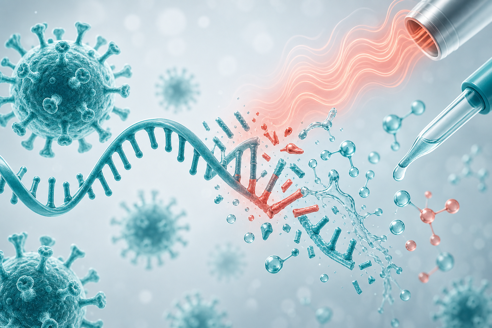

Viral RNA Biosafety · Positive-Sense RNA Viruses
Incomplete Inactivation of Positive-Sense Viral RNA by Commonly Used Virus Inactivation Protocols

01
Background
Positive-sense RNA genomes act as mRNA — and can still be infectious after particle inactivation.
- Upon cell entry, +ssRNA is translated by host ribosomes to drive viral protein production and new virions.
- Many lab protocols validate inactivation of virus particles, but rarely confirm loss of infectious RNA.
- How well heat, formaldehyde, and H2O2 silence +ssRNA remains poorly defined.
02
Experimental Design
One column · top to bottom
1 · Model viruses
Togaviridae YFV
Flaviviridae SVA
Picornaviridae SARS-CoV-2
Coronaviridae
2 · Volume
500 µL virus per inactivation
3 · Inactivation treatments
Heat
37°C · 56°C · 75°C · 90°C
Formaldehyde · 15 min
3.7% · 1.85% · 0.74% · 0.37% · 0.15% · 0.074% · 0.037%
H2O2 · 15 min
12% · 6% · 3% · 1.5%
4 · Readout
03
Heat Required for Complete RNA Inactivation
Conditions needed to fully silence infectious viral RNA differed sharply by virus.
SINV
Togaviridae
90°C · 15 min
Most heat-resistant RNA in this set
YFV
Flaviviridae
56°C · 60 min
Longest hold at 56°C
SVA
Picornaviridae
56°C · 45 min
Intermediate heat demand
SARS-CoV-2
Coronaviridae
56°C · 5 min
Most heat-sensitive RNA
04
Chemical Inactivation Is Uneven
Formaldehyde and paraformaldehyde do not treat all +ssRNA genomes equally.
- SINV & SVA: 3.7% formaldehyde and 4% paraformaldehyde failed to inactivate viral RNA.
- YFV: formaldehyde inactivated RNA at all ratios tested; paraformaldehyde only at 1:50 or higher.
- SARS-CoV-2: highly sensitive — inactivated by both chemicals even at the lowest dilution tested (1:100).
05
Key Takeaway
Common virus inactivation methods do not reliably make positive-sense viral RNA noninfectious.
Protocols should be optimized to confirm inactivation of both viral particles and viral RNA — especially for SINV and SVA, where chemical methods failed under standard conditions.
Ask us about virus-specific heat and chemical thresholds for safer +ssRNA workflows.